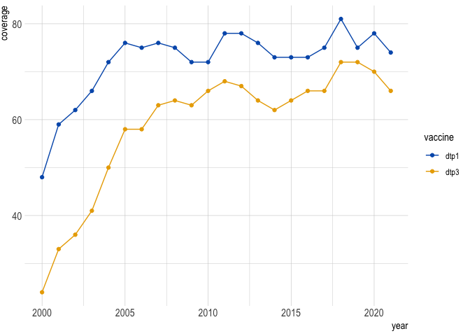

This package is a suite of helper functions that can be used at Gavi. It has functions to help simplify repeat procedures, like loading common data, gavi specific colors and themes for plots and tables, and functions which add and filter common varibles like country groupings and iso3 codes.
Installation
You can install the development version of gavir from GitHub with:
# install.packages("devtools")
devtools::install_github("joshualorin/gavir")Examples
You can use the get_*() functions to load data:
library(gavir)
library(tidyverse, warn.conflicts = F, verbose = F)
#> ── Attaching packages ─────────────────────────────────────── tidyverse 1.3.2 ──
#> ✔ ggplot2 3.4.2 ✔ purrr 0.3.4
#> ✔ tibble 3.1.8 ✔ dplyr 1.0.10
#> ✔ tidyr 1.2.0 ✔ stringr 1.5.0
#> ✔ readr 2.1.3 ✔ forcats 0.5.2
#> ── Conflicts ────────────────────────────────────────── tidyverse_conflicts() ──
#> ✖ dplyr::filter() masks stats::filter()
#> ✖ dplyr::lag() masks stats::lag()
# all functions require a version date
get_groupings("2023-07")
#> Reading in groupings file dated: 2023-07
#> Interesting! The groupings file you have selected is not the most recent. If this was unintentional, you can update to the most recent file, which is 2023-08
#> # A tibble: 196 × 61
#> iso3 iso3_num iso2 country count…¹ lang global gavi77 gavi73 gavi72 gavi68
#> <chr> <dbl> <chr> <chr> <chr> <chr> <dbl> <dbl> <dbl> <dbl> <dbl>
#> 1 AFG 4 AF Afghan… Afghan… eng 1 1 1 1 1
#> 2 AGO 24 AO Angola Angola eng 1 1 1 1 1
#> 3 ALB 8 AL Albania Albania eng 1 1 0 0 0
#> 4 AND 20 AD Andorra Andorra eng 1 0 0 0 0
#> 5 ARE 784 AE United… United… eng 1 0 0 0 0
#> 6 ARG 32 AR Argent… Argent… eng 1 0 0 0 0
#> 7 ARM 51 AM Armenia Armenia eng 1 1 1 1 1
#> 8 ATG 28 AG Antigu… Antigu… eng 1 0 0 0 0
#> 9 AUS 36 AU Austra… Austra… eng 1 0 0 0 0
#> 10 AUT 40 AT Austria Austria eng 1 0 0 0 0
#> # … with 186 more rows, 50 more variables: gavi57 <dbl>, gavi55 <dbl>,
#> # mics45 <dbl>, dov96 <dbl>, vimc112 <dbl>, who_region <chr>,
#> # gavi_region <chr>, gavi_region_short <chr>, pef_type <chr>,
#> # continental_africa <dbl>, francophone <chr>, indo_pacific <dbl>,
#> # regional_je <dbl>, regional_mena <dbl>, regional_yfv_2016 <dbl>,
#> # regional_yfv_2020 <dbl>, regional_ipv <dbl>, segments_2020 <chr>,
#> # segments_2021 <chr>, segments_2022 <chr>, segments_2023 <chr>, …
# and most have additional parameters you can fiddle with
get_ihme("2023-02", source = "subnational", vaccine = "dtp3")
#> Reading in Subnational IHME file dated 2023-02 and aggregated to polio shapes
#> Rows: 1217964 Columns: 17── Column specification ────────────────────────────────────────────────────────
#> Delimiter: ","
#> chr (8): iso3, admin2, admin2_code, vaccine, admin1, admin1_code, pop_model,...
#> dbl (9): year, coverage, pu1_final, unvax_total, pct_unvax, upper, lower, pu...
#> ℹ Use `spec()` to retrieve the full column specification for this data.
#> ℹ Specify the column types or set `show_col_types = FALSE` to quiet this message.
#> # A tibble: 1,217,964 × 17
#> iso3 admin2 admin…¹ year vaccine cover…² pu1_f…³ unvax…⁴ pct_u…⁵ admin1
#> <chr> <chr> <chr> <dbl> <chr> <dbl> <dbl> <dbl> <dbl> <chr>
#> 1 ETH MAO KOMO … {00061… 2000 dtp1 0.293 1723. 1218. 0.707 BENES…
#> 2 ETH MAO KOMO … {00061… 2001 dtp1 0.430 1760. 1003. 0.570 BENES…
#> 3 ETH MAO KOMO … {00061… 2002 dtp1 0.413 1792. 1052. 0.587 BENES…
#> 4 ETH MAO KOMO … {00061… 2003 dtp1 0.377 1807. 1126. 0.623 BENES…
#> 5 ETH MAO KOMO … {00061… 2004 dtp1 0.448 1846. 1019. 0.552 BENES…
#> 6 ETH MAO KOMO … {00061… 2005 dtp1 0.536 1885. 874. 0.464 BENES…
#> 7 ETH MAO KOMO … {00061… 2006 dtp1 0.617 1906. 730. 0.383 BENES…
#> 8 ETH MAO KOMO … {00061… 2007 dtp1 0.671 1931. 636. 0.329 BENES…
#> 9 ETH MAO KOMO … {00061… 2008 dtp1 0.723 1955. 542. 0.277 BENES…
#> 10 ETH MAO KOMO … {00061… 2009 dtp1 0.747 1958. 496. 0.253 BENES…
#> # … with 1,217,954 more rows, 7 more variables: admin1_code <chr>,
#> # pop_model <chr>, pop_adjustment <chr>, upper <dbl>, lower <dbl>,
#> # pu1_uncalib <dbl>, pu1_calib <dbl>, and abbreviated variable names
#> # ¹admin2_code, ²coverage, ³pu1_final, ⁴unvax_total, ⁵pct_unvaxtheme_*() and scale_*() functions allow for standard gavi formatting and colors:
wuenic %>%
filter(iso3 == "AFG" & vaccine %in% c("dtp1", "dtp3")) %>%
ggplot(aes(year, coverage, color = vaccine)) +
geom_line() +
geom_point() +
scale_color_gavi() +
theme_gavi()